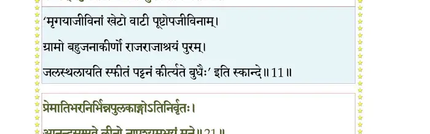

स्कन्ध 1 · अध्याय 6
श्लोक १
सूत उवाच–
एवं निशम्य भगवान् देवर्षेर्जन्म कर्म च ।
भूयः पप्रच्छ तं ब्रह्मन् व्यासः सत्यवतीसुतः।। १ ।।
एवं निशम्य भगवान् देवर्षेर्जन्म कर्म च ।
भूयः पप्रच्छ तं ब्रह्मन् व्यासः सत्यवतीसुतः।। १ ।।
श्लोक २
व्यास उवाच–
भिक्षुभिर्विप्रवसिते विज्ञानादेष्टृभिस्तव ।
वर्तमानो वयस्याद्ये ततः किमकरोद्भवान्।। २ ।।
भिक्षुभिर्विप्रवसिते विज्ञानादेष्टृभिस्तव ।
वर्तमानो वयस्याद्ये ततः किमकरोद्भवान्।। २ ।।
श्लोक ३
स्वायम्भुव कया वृत्या वर्तितं ते परं वयः ।
कथं वेदमुदस्राक्षीः काले प्राप्ते कलेवरम्।। ३ ।।
कथं वेदमुदस्राक्षीः काले प्राप्ते कलेवरम्।। ३ ।।
श्लोक ४
प्राक्कल्पविषयामेतां स्मृतिं ते सुरसत्तम ।
नह्येव व्यवधात्काल एष सर्वनिराकृतिः।। ४ ।।
नह्येव व्यवधात्काल एष सर्वनिराकृतिः।। ४ ।।
श्लोक ५
नारद उवाच–
भिक्षुभिर्विप्रवसिते विज्ञानादेष्टृभिर्मम ।
वर्तमानो वयस्याद्ये तत एतदकार्षम्।। ५ ।।
भिक्षुभिर्विप्रवसिते विज्ञानादेष्टृभिर्मम ।
वर्तमानो वयस्याद्ये तत एतदकार्षम्।। ५ ।।
श्लोक ६
एकात्मजा मे जननी योषिन्मूढा च किङ्करी ।
मय्यात्मजेऽनन्यगतौ चक्रे स्नेहानुबन्धनम्।। ६ ।।
मय्यात्मजेऽनन्यगतौ चक्रे स्नेहानुबन्धनम्।। ६ ।।
श्लोक ७
साऽस्वतन्त्रा न १कल्पाऽसीद्योगक्षेमं ममेच्छती ।
ईशस्य हि वशे लोको योषा दारुमयी यथा।। ७ ।।
ईशस्य हि वशे लोको योषा दारुमयी यथा।। ७ ।।
श्लोक ८
अहं च तद्ब्रह्मकुल ऊषिवांस्तदपेक्षया ।
दिग्देशकालव्युत्पन्नो बालकः पञ्चहायनः।। ८ ।।
दिग्देशकालव्युत्पन्नो बालकः पञ्चहायनः।। ८ ।।
श्लोक ९
एकदा निर्गतां गेहाद्दुहन्तीं निशि गां पथि ।
सर्पोऽदशत्पदा स्पृष्टः कृपणां कालचोदितः।। ९ ।।
सर्पोऽदशत्पदा स्पृष्टः कृपणां कालचोदितः।। ९ ।।
श्लोक १०
तदा तदहमीशस्य भक्तानां समभीप्सितम् ।
अनुग्रहं मन्यमानः प्रातिष्ठं दिशमुत्तराम्।। १० ।।
अनुग्रहं मन्यमानः प्रातिष्ठं दिशमुत्तराम्।। १० ।।
श्लोक ११
स्फीतान् जनपदांस्तत्र पुरग्रामव्रजाकरान् ।
खेटान् पट्टनवाटीश्च वनान्युपवनानि च।। ११ ।।
खेटान् पट्टनवाटीश्च वनान्युपवनानि च।। ११ ।।
भागवततात्पर्यनिर्णय

श्लोक १२
विचित्रधातुचित्राद्रीनिभभग्नभुजद्रुमान् ।
जलाशयांश्छिवजलान्नलिनीः सुरसेविताः।। १२ ।।
जलाशयांश्छिवजलान्नलिनीः सुरसेविताः।। १२ ।।
श्लोक १३
चित्रस्वनैः पत्ररथैर्विभ्रमद्भ्रमरश्रियः ।
नलवेणुशरस्तम्बकुशकीचकगह्वरम्।। १३ ।।
नलवेणुशरस्तम्बकुशकीचकगह्वरम्।। १३ ।।
श्लोक १४
एक एवातियातोऽहमद्राक्षं विपिनं महत् ।
घोरं प्रतिभयाकारं व्यालोलूकशिवाजिरम्।। १४ ।।
घोरं प्रतिभयाकारं व्यालोलूकशिवाजिरम्।। १४ ।।
श्लोक १५
परिश्रान्तेन्द्रियात्माऽहं तृट्परीतो बुभुक्षितः ।
स्नात्वा पीत्वा ह्रदे नद्या उपस्पृष्टो गतश्रमः।। १५ ।।
स्नात्वा पीत्वा ह्रदे नद्या उपस्पृष्टो गतश्रमः।। १५ ।।
श्लोक १६
तस्मिन्निर्मनुजेऽरण्ये पिप्पलोपस्थ आश्रितः ।
आत्मनाऽऽत्मानमात्मस्थं यथाश्रुतमचिन्तयम्।। १६ ।।
आत्मनाऽऽत्मानमात्मस्थं यथाश्रुतमचिन्तयम्।। १६ ।।
श्लोक १७
स्वप्नो मायाऽग्रहः शय्या जाग्रदाभास आत्मनः ।
नामरूपक्रियावृत्तिः संविच्छास्त्रं परं पदम्।। १७ ।।
नामरूपक्रियावृत्तिः संविच्छास्त्रं परं पदम्।। १७ ।।
श्लोक १८
नेन्द्रियार्थं च न स्वप्नं न सुप्तं न मनोरथम् ।
न निरोधं चानुगच्छेच्चित्रं तद्भगवत्पदम्।। १८ ।।
न निरोधं चानुगच्छेच्चित्रं तद्भगवत्पदम्।। १८ ।।
श्लोक १९
स एको भगवानग्रे क्रीडिष्यन्निदमात्मनः ।
सृष्ट्वा विहृत्य तज्जग्ध्वा उदास्ते केवलः पुनः।। १९ ।।
सृष्ट्वा विहृत्य तज्जग्ध्वा उदास्ते केवलः पुनः।। १९ ।।
श्लोक २०
ध्यायतश्चरणाम्भोजं भावनिर्वृतचेतसः ।
उत्कण्ठाश्रुकलाक्षस्य हृद्यासीन्मे शनैर्हरिः।। २० ।।
उत्कण्ठाश्रुकलाक्षस्य हृद्यासीन्मे शनैर्हरिः।। २० ।।
श्लोक २१
प्रेमातिभारनिर्भिन्नपुलकाङ्गोऽतिनिर्वृतः ।
आनन्दसंप्लवे लीनो नापश्यमुभयं मुने।। २१ ।।
आनन्दसंप्लवे लीनो नापश्यमुभयं मुने।। २१ ।।
श्लोक २२
रूपं भगवतो यत्तन्मनःकान्तं सुखावहम् ।
अपश्यन् सहसोत्तस्थौ कैवल्याद्दुर्मना इव।। २२ ।।
अपश्यन् सहसोत्तस्थौ कैवल्याद्दुर्मना इव।। २२ ।।
श्लोक २३
दिदृक्षुस्तदहं भूयः प्रणिधाय मनो हृदि ।
वीक्षमाणोऽपि नापश्यमवितृप्त इवातुरः।। २३ ।।
वीक्षमाणोऽपि नापश्यमवितृप्त इवातुरः।। २३ ।।
श्लोक २४
एवं यतन्तं विजने मामाहागोचरो गिराम् ।
गम्भीरश्लक्ष्णया वाचा शुचः प्रशमयन्निव।। २४ ।।
गम्भीरश्लक्ष्णया वाचा शुचः प्रशमयन्निव।। २४ ।।
श्लोक २५
हन्तास्मिन् जन्मनि भवान्न मां द्रष्टुमिहार्हति ।
अविपक्वकषायाणां दुर्दर्शोऽहं कुयोगिनाम्।। २५ ।।
अविपक्वकषायाणां दुर्दर्शोऽहं कुयोगिनाम्।। २५ ।।
श्लोक २६
सकृद्यद्दर्शितं रूपमेतत्कामाय तेऽनघ ।
मत्कामः शनकैः साधु सर्वान्मुञ्चति हृच्छ्रयान्।। २६ ।।
मत्कामः शनकैः साधु सर्वान्मुञ्चति हृच्छ्रयान्।। २६ ।।
श्लोक २७
सत्सेवया दीर्घया वै जाता मयि दृढा मतिः ।
हित्वाऽवद्यमिमं लोकं गन्ता मज्जनतामसि।। २७ ।।
हित्वाऽवद्यमिमं लोकं गन्ता मज्जनतामसि।। २७ ।।
श्लोक २८
मतिर्मयि निबद्धेऽयं न विपद्येत कर्हिचित् ।
प्रजासर्गनिरोधेऽपि स्मृतिश्च मदनुग्रहात्।। २८ ।।
प्रजासर्गनिरोधेऽपि स्मृतिश्च मदनुग्रहात्।। २८ ।।
श्लोक २९
एतावदुक्त्वा विरराम तन्महद्-
भूतं नभोलिङ्गमलिङ्गमीश्वरम् ।
अहं च तस्मै महतां महीयसे
शीर्ष्णाऽवनामं विदधेऽनुकम्पितः।। २९ ।।
भूतं नभोलिङ्गमलिङ्गमीश्वरम् ।
अहं च तस्मै महतां महीयसे
शीर्ष्णाऽवनामं विदधेऽनुकम्पितः।। २९ ।।
श्लोक ३०
नामान्यनन्तस्य गतत्रपः पठन् गुह्यानि भद्राणि कृतानि च स्मरन् ।
गां पर्यटंस्तुष्टमना गतस्पृहः कालं प्रतीक्षन्नपटो विमत्सरः।। ३० ।।
गां पर्यटंस्तुष्टमना गतस्पृहः कालं प्रतीक्षन्नपटो विमत्सरः।। ३० ।।
श्लोक ३१
एवं कृष्णमतेर्ब्रह्मन्नसक्तस्यामलात्मनः ।
कालः प्रादुरभूत्काले विद्युत्सौदामिनी यथा।। ३१ ।।
कालः प्रादुरभूत्काले विद्युत्सौदामिनी यथा।। ३१ ।।
श्लोक ३२
एवं मयि प्रयुञ्जाने शुद्धां भागवतीं तनुम् ।
प्रारब्धकर्मनिर्वाणो न्यपतत्पाञ्चभौतिकः।। ३२ ।।
प्रारब्धकर्मनिर्वाणो न्यपतत्पाञ्चभौतिकः।। ३२ ।।
श्लोक ३३
कल्पान्त इदमादय शयानेऽम्भस्युदन्वतः ।
शिशयिष्णोरनुप्राणं विवेशान्तरहं विभोः।। ३३ ।।
शिशयिष्णोरनुप्राणं विवेशान्तरहं विभोः।। ३३ ।।
श्लोक ३४
सहस्रयुगपर्यन्त उत्थायेदं सिसृक्षतः ।
मरीचिमिश्रा ऋषयः प्राणेभ्योऽहं च जज्ञिरे।। ३४ ।।
मरीचिमिश्रा ऋषयः प्राणेभ्योऽहं च जज्ञिरे।। ३४ ।।
श्लोक ३५
अन्तर्बहिश्च लोकान् त्रीन् पर्येम्यस्कन्दितव्रतः ।
अनुग्रहान्महाविष्णोरविघातगतिः क्वचित्।। ३५ ।।
अनुग्रहान्महाविष्णोरविघातगतिः क्वचित्।। ३५ ।।
श्लोक ३६
देवदत्तामिमां वीणां स्वरब्रह्मविभूषिताम् ।
मूर्च्छयित्वा हरिकथां गायमानश्चराम्यहम्।। ३६ ।।
मूर्च्छयित्वा हरिकथां गायमानश्चराम्यहम्।। ३६ ।।
श्लोक ३७
प्रगायतश्च वीर्याणि तीर्थपादः प्रियश्रवाः ।
आहूत इव मे शीघ्रं दर्शनं याति चेतसि।। ३७ ।।
आहूत इव मे शीघ्रं दर्शनं याति चेतसि।। ३७ ।।
श्लोक ३८
एतदातुरचित्तानां मात्रास्पर्शेच्छया मुहुः ।
भवसिन्धुप्लवो दृष्टो हरिचर्यानुवर्णनम्।। ३८ ।।
भवसिन्धुप्लवो दृष्टो हरिचर्यानुवर्णनम्।। ३८ ।।
श्लोक ३९
यमादिभिर्येगपथैः कामलोभहतो मुहुः ।
मुकुन्दसेवया यद्वत्तथात्माऽद्धा न शाम्यति।। ३९ ।।
मुकुन्दसेवया यद्वत्तथात्माऽद्धा न शाम्यति।। ३९ ।।
श्लोक ४०
सर्वं तदिदमाख्यातं यत्पृष्टोऽहं त्वयाऽनघ ।
जन्मकर्मरहस्यं मे भवतश्चात्मतोषणम्।। ४० ।।
जन्मकर्मरहस्यं मे भवतश्चात्मतोषणम्।। ४० ।।
श्लोक ४१
सूत उवाच–
एवं सम्भाष्य भगवान्नारदो वासवीसुतम् ।
आमन्त्र्य वीणां रणयन् ययौ यादृच्छिको यतिः।। ४१ ।।
एवं सम्भाष्य भगवान्नारदो वासवीसुतम् ।
आमन्त्र्य वीणां रणयन् ययौ यादृच्छिको यतिः।। ४१ ।।
श्लोक ४२
अहो देवर्षिर्धन्योऽयं यः कीर्तिं शार्ङ्गधन्वनः ।
गायन् माध्व्या गिरा तन्त्र्या रमयत्यातुरं जगत्।। ४२ ।।
गायन् माध्व्या गिरा तन्त्र्या रमयत्यातुरं जगत्।। ४२ ।।
।। इति श्रीमद्भागवते प्रथमकन्धे षष्ठोऽध्यायः ।।